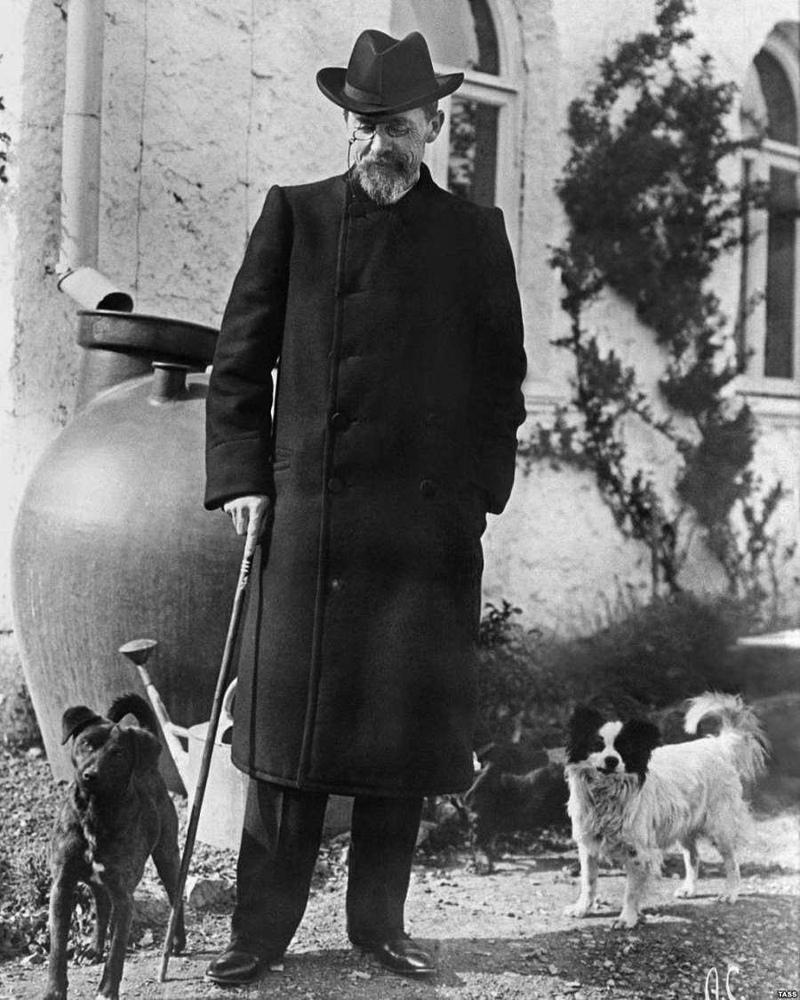

"Anton Pavlovich Chekhov walks with dogs in Yalta"
Here's a time line of Chekhov's life:
- 1860 — Born in Taganrog, Russian Empire.
- 1876 — His family shifted to Moscow but Anton stayed on as he was pursuing his education. He took up odd jobs to suport a living and finance his studies. He engaged in reading and writing extensively.
- 1879 — He moved to Moscow to join his family. Therein, he gained admission at the I.M. Sechenov First Moscow State Medical University.
- 1886 — He was invited to write for Novoye Vremya (New Times),famous Russian publishing company.
- 1887 — His work, ‘At Dusk’ won him the coveted Pushkin Prize.
- 1890 — He moved to the far east of Russia, where he spent much of his time interviewing thousands of convict and settlers for a census. Meanwhile, during the journey, he wrote numerous letters to his sister about the town of Tomsk which are considered amongst his best work till date.
- 1892 — He moved to Melikhovo, a small country estate where he lived until 1899. During this time, he wrote under the pen name Shcheglov.
- 1894 — He started to pen his play, ‘The Seagull’.
- 1901 — He finally tied the nuptials with Olga Knipper.
- 1904 — He was terminally ill with tuberculosis. By June, he moved to a spa town with his wife Olga. He breathed his last after a shot of camphor and a glass of champagne.
"Wisdom.... comes not from age, but from education and learning".
-- Anton Pavlovich Chekhov.
Learn more about Anton Pavlovich Chekhov